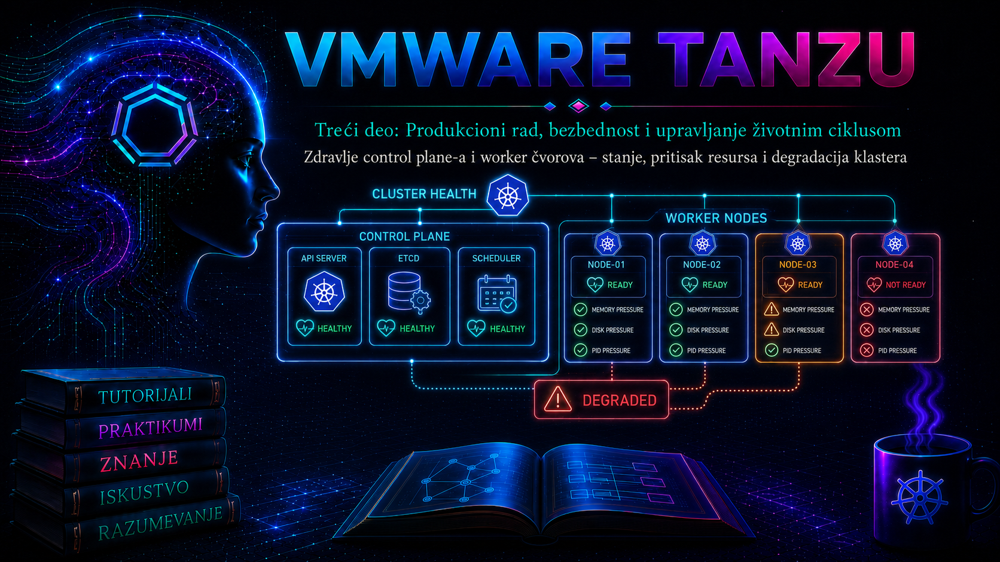

VMware & Tanzu

Zdrav VKS klaster nije samo klaster u kome kubectl get nodes trenutno prikazuje
Ready. Operativno zdravlje vSphere Kubernetes Service klastera znači da su željeno i
stvarno stanje usklađeni, Kubernetes API stabilno dostupan, control plane sposoban da održava stanje
i obrađuje promene, worker čvorovi sposobni da prihvate workload-e, a mreža, storage, DNS, vreme i
vSphere resursi ne uvode skrivenu degradaciju. Zato se zdravlje dokazuje trendom i korelacijom više
slojeva, a ne jednim zelenim indikatorom.
Ova lekcija povezuje metrike, alarme, događaje, logove i audit trag iz prethodnih lekcija. Najpre utvrđujemo obim i posledicu, zatim razdvajamo problem deklarativnog upravljanja na Supervisor-u od problema unutar workload klastera i problema vSphere infrastrukture. Tako administrator ne leči simptom niti ručno menja objekat kojim upravlja kontroler.
Tri ravni zdravlja VKS klastera
| Ravan | Šta se proverava | Dokazi | Ograničenje zaključka |
|---|---|---|---|
| Supervisor i Cluster API | Cluster/Machine reconciliation, infrastruktura i control plane | Conditions, events, observed generation, Machine i MachineDeployment | Ne dokazuje zdravlje sistemskih Pod-ova u VKS klasteru |
| VKS workload klaster | API, Node conditions, Lease, kubelet, runtime, CNI, CSI i DNS | kubectl, metrike, events i podržani log bundle | Ne dokazuje da VM, host ili datastore nemaju contention |
| vSphere infrastruktura | VM, ESXi, resource pool, mreža, datastore, HA/DRS | vSphere Client, alarmi, task/events i performance trendovi | Ne dokazuje da scheduler, CNI ili CSI rade ispravno |
Nazivi resursa zavise od vSphere/VCF verzije i generacije API-ja. Starija dokumentacija koristi
TKG Service i TanzuKubernetesCluster, dok novije platforme koriste VKS i aktuelne
Cluster API resurse. Pre upotrebe primera proverite podržanu verziju i komandom
kubectl api-resources utvrdite stvarno dostupne vrste; ne primenjujte slepo komandu iz
druge generacije proizvoda.
Zdravlje control plane-a
Control plane obuhvata API server, etcd, scheduler, controller manager i mehanizme
kojima VKS/Cluster API održava njihove mašine. Zdravlje znači: API endpoint je dostupan; očekivani
broj replika je raspoloživ; kontroleri napreduju ka željenom stanju; nema trajnih timeout-a, 5xx
odgovora ili rastuće latencije; DNS, NTP, sertifikati, mreža i storage su dostupni. API koji odgovara
na jednostavan zahtev još ne dokazuje da scheduler radi, da je etcd stabilan ili da
reconciliation napreduje.
Kada podržana produkciona topologija nudi tri control plane člana, gubitak jednog ostavlja većinu,
dok gubitak dva prekida pouzdan upis u etcd. Administrator ne sme samostalno brisati
control plane VM, članstvo u etcd-u, statičke Pod manifeste ili sertifikate. To su
upravljane komponente; za recovery se koristi verzijski tačna Broadcom procedura i, kada je potrebno,
podrška proizvođača.
Node conditions, heartbeat, taints i eviction
Kubelet obnavlja Node status i Lease u namespace-u kube-node-lease. Node controller iz
tih signala određuje dostupnost. Ready=True znači da je čvor zdrav prema kubelet
proverama; Ready=False da je prijavio problem; Ready=Unknown da control
plane u grace periodu nije dobio heartbeat. False upućuje na poznat lokalni problem,
a Unknown na prekid komunikacije, ugašen/zamrznut VM, zaustavljen kubelet ili teško
iscrpljenje resursa.
| Condition | Zdravo | Nepovoljno stanje | Prvi dokazi |
|---|---|---|---|
Ready | True | False: nezdrav; Unknown: nema heartbeat-a | Reason, Message, vreme tranzicije, Lease, VM i mreža |
MemoryPressure | False | Niska raspoloživa memorija; mogući eviction i OOM | Working set, requests/limits, Evicted, OOMKilled |
DiskPressure | False | Nizak kapacitet ili inode-i na node/image filesystem-u | Image-i, logovi, ephemeral storage i GC događaji |
PIDPressure | False | Broj procesa ugrožava kubelet/runtime | Runaway workload, fork greške i sistemski logovi |
NetworkUnavailable | False | Mreža čvora nije inicijalizovana; detalji zavise od CNI-ja | CNI Pod-ovi, rute, MTU, interfejsi i IPAM |
Conditions i taints nisu isto. Control plane probleme mapira na taints kao što su
node.kubernetes.io/not-ready, unreachable, memory-pressure
i disk-pressure. Scheduler odlučuje prema taints i tolerations, a
NoExecute može izazvati evikciju. Podrazumevane tolerancije za
not-ready/unreachable tipično odlažu evikciju približno pet minuta, ali
aplikacija može imati drugačiju eksplicitnu toleranciju.
Pritisak resursa i rana degradacija
Requests utiču na planiranje, limits ograničavaju potrošnju, a node-pressure eviction štiti OS i
kubelet. Visoka rezervacija nije isto što i visoka stvarna potrošnja: prva objašnjava
Insufficient cpu/memory, druga throttling, OOM i eviction. Kubernetes nema standardni
CPUPressure condition; CPU problem se vidi kroz throttling, spor kubelet/API, CPU ready
u vSphere-u i neuspešno raspoređivanje. DiskPressure često izazivaju image slojevi, container logovi,
writable layer i ephemeral storage. Nasumično brisanje runtime direktorijuma nije podržana korekcija.
VM može imati dovoljno deklarisanih vCPU i RAM-a, ali resource pool limit, host contention,
ballooning, swapping ili storage latencija mogu oduzeti efektivni kapacitet. Degradacija zato počinje
pre NotReady: rast restarta i API latencije, kasni Lease, duže kreiranje Pod-ova,
ponovljeni leader election, rast Pending workload-a, image pull ili volume attach kašnjenja.
Minimalno invazivan dijagnostički tok
- Definišite simptom, vreme i obim: API, jedan node, failure domain, svi worker-i ili aplikacija.
- Sačuvajte dokaze: Cluster/Machine/Node opis, događaje, metrike, vCenter taskove i alarme pre promene.
- Proverite poslednje promene: upgrade, scale, VM klasa, quota, CNI/CSI, firewall, DNS/NTP ili resource pool.
- Razdvojite ravni: Machine bez NodeRef ukazuje na provisioning/bootstrap; Machine sa NodeRef i NotReady Node-om na kubelet, runtime, CNI ili resurse.
- Postavite proverljivu hipotezu i potvrdite je nezavisnim signalom.
- Primenite najmanju podržanu korekciju; ne popravljajte ručno resurs koji kontroler poseduje.
- Validirajte oporavak: API, Node, sistemske Pod-ove, aplikacije, DNS, storage i infrastrukturni baseline.
Read-only komande i tumačenje
Administrator prvo potvrđuje kubeconfig i kontekst. Sledeći upiti čitaju stanje i bezbedni su za produkciju; široki upiti ipak mogu opteretiti veoma veliki API.
kubectl config current-context
kubectl cluster-info
kubectl get --raw='/readyz?verbose'
kubectl get nodes -o wide
kubectl get nodes -o custom-columns='NAME:.metadata.name,READY:.status.conditions[?(@.type=="Ready")].status,MEMORY:.status.conditions[?(@.type=="MemoryPressure")].status,DISK:.status.conditions[?(@.type=="DiskPressure")].status,PID:.status.conditions[?(@.type=="PIDPressure")].status,UNSCHEDULABLE:.spec.unschedulable'
kubectl describe node <NODE_NAME>
kubectl get lease -n kube-node-lease
kubectl get events -A --sort-by=.metadata.creationTimestamp
kubectl get pods -A --field-selector=status.phase=Pending
kubectl top nodes
kubectl top pods -A --sort-by=memory
/readyz je prikladniji signal spremnosti API servera od istorijskog
/healthz, ali detalji zavise od verzije i RBAC-a. kubectl top zahteva
Metrics API; njegov neuspeh dokazuje kvar telemetrijskog lanca, ne postojanje ili odsustvo pritiska.
U Supervisor namespace kontekstu prvo uradite discovery, jer plural i API grupa zavise od verzije:
kubectl api-resources | grep -Ei 'cluster|machine'
kubectl get clusters
kubectl describe cluster <CLUSTER_NAME>
kubectl get machines -o wide
kubectl describe machine <MACHINE_NAME>
kubectl get events --sort-by=.metadata.creationTimestamp
Traže se Ready, infrastructure i control plane conditions, Reason, Message, vreme tranzicije i
observed generation. Ako metadata.generation napreduje, a status zaostaje, kontroler
možda nije obradio specifikaciju. Ponavljanje iste greške u pravilnim intervalima često pokazuje
neuspelu reconciliation petlju.
Mapa simptoma i reakcija
| Simptom | Mogući uzrok | Potvrda | Bezbedna reakcija |
|---|---|---|---|
| API timeout; promene kasne | Control plane contention, VIP/mreža, storage ili gubitak replike | readyz, API latency, conditions i vSphere trendovi | Stabilizovati dokazanu zavisnost; za kvorum/sertifikate koristiti Broadcom recovery proceduru |
Ready=Unknown | VM/kubelet/mreža ili ozbiljan CPU/I/O zastoj | Lease, VM status, TCP putanja, events i podržani logovi | Vratiti komunikaciju/resurse; nepovratni worker zameniti deklarativno |
| MemoryPressure, Evicted, OOMKilled | Leak, loši requests/limits, premala klasa ili contention | Conditions, QoS, trend i vSphere balloon/swap | Smanjiti opterećenje/povećati kapacitet; ispraviti resurse workload-a |
| DiskPressure | Image-i, logovi, ephemeral storage ili inode-i | Kubelet poruka, eviction events i filesystem metrike | Zaustaviti rast; podržano čišćenje/rotacija; ne brisati runtime podatke ručno |
| Machine bez NodeRef | VM provisioning, bootstrap, IPAM, DNS/NTP, quota ili CNI | Machine conditions/events, vCenter taskovi, adresa/providerID | Ispraviti zavisnost i dozvoliti reconciliation; ne praviti ručni VM |
| Node Ready, aplikacija degradirana | CNI/CSI/DNS, Pending Pod, PDB ili spoljna zavisnost | Sistemski workload-i, endpoints, Pod events i test DNS/storage-a | Incident rešavati u pogođenom sloju; ne restartovati zdrave node-ove |
Praktikum – bazna linija i degradirani worker
Cilj i kontekst. Napraviti dokazivu health snimku, povezati VKS Node sa Cluster API Machine i vSphere VM-om, analizirati realan incident i sprovesti bezbedan rollback.
Topologija i preduslovi. Isključivo laboratorijski VKS sa redundantnim control plane-om i najmanje tri worker-a; dozvole za čitanje Node/Lease/events i Cluster API resursa; odobren namespace; vSphere Client i kubectl. Klaster ne sme imati aktivan upgrade/remediation.
Rizik. Stvarno iscrpljivanje memorije/diska može destabilizovati node. Vežba koristi mali workload i zadati incidentni nalaz; produkcioni node se ne drenira, restartuje niti briše.
Vežba 1 – snimanje početnog stanja
INCIDENT_DIR="vks-health-$(date -u +%Y%m%dT%H%M%SZ)"
mkdir -p "$INCIDENT_DIR"
kubectl config current-context > "$INCIDENT_DIR/context.txt"
kubectl get --raw='/readyz?verbose' > "$INCIDENT_DIR/readyz.txt"
kubectl get nodes -o wide > "$INCIDENT_DIR/nodes-wide.txt"
kubectl get nodes -o yaml > "$INCIDENT_DIR/nodes.yaml"
kubectl get pods -A -o wide > "$INCIDENT_DIR/pods-wide.txt"
kubectl get events -A --sort-by=.metadata.creationTimestamp > "$INCIDENT_DIR/events.txt"
kubectl get lease -n kube-node-lease -o yaml > "$INCIDENT_DIR/node-leases.yaml"
Komande samo čitaju klaster i lokalno zapisuju dokaze. YAML sadrži interne adrese i operativne
podatke; zaštitite ga i redigujte pre spoljnog deljenja. Očekuje se ok za relevantne
readyz provere, svi očekivani node-ovi Ready, pressure conditions False i Cluster/Machine bez
aktivne greške. U vSphere Client-u za isti period proverite VM status, CPU ready, balloon/swap,
datastore latenciju, alarme i taskove.
Vežba 2 – bezbedan test workload
apiVersion: v1
kind: Pod
metadata:
name: health-lab-memory
namespace: vks-health-lab
spec:
restartPolicy: Never
containers:
- name: observer
image: registry.k8s.io/pause:3.10
resources:
requests:
cpu: 10m
memory: 32Mi
limits:
cpu: 50m
memory: 64Mikubectl create namespace vks-health-lab
kubectl apply -f health-lab-memory.yaml
kubectl get pod -n vks-health-lab -o wide
kubectl describe pod -n vks-health-lab health-lab-memory
kubectl get pod -n vks-health-lab health-lab-memory -o jsonpath='{.status.qosClass}{"\n"}'
kubectl top pod -n vks-health-lab health-lab-memory
Kreiranje namespace-a i Pod-a menja stanje i dozvoljeno je samo u laboratoriji. Očekuje se Running
i QoS Burstable. Ako je Pending, events moraju razlikovati nedostatak resursa, taint, affinity i
image pull. Neuspešan top vodi ka Metrics API-ju, ne zaključku da Pod nema potrošnju.
Vežba 3 – analiza incidenta
10:12:05 worker-03: Ready=True, MemoryPressure=False
10:14:40 vCenter: resource pool CPU limit reached
10:15:11 worker-03: Ready=Unknown, reason=NodeStatusUnknown
10:15:14 taint: node.kubernetes.io/unreachable:NoExecute
10:20:20 stateless Pod-ovi se premeštaju; StatefulSet Pod ostaje Pending
10:21:02 CSI: waiting for volume attachment/detachment- Simptom/posledica: worker je nedostupan; stateful replika nema oporavak.
- Neposredni uzrok: nema heartbeat-a; Node je Unknown i dobija unreachable taint.
- Osnovni uzrok za potvrdu: CPU limit sprečava VM da izvršava kubelet; potvrditi CPU ready/usage, VM responsiveness i odsustvo mrežnog kvara.
- Privremena mera: zaštititi servisni kapacitet i ukloniti dokazani limit prema change proceduri; ne forsirati brisanje stateful Pod-a dok volume status nije poznat.
- Trajna mera: ispraviti resource pool sizing/alarme, rezervu, requests i VM klase; testirati gubitak worker-a.
Oporavak zahteva novi heartbeat, Ready=True, uklonjen automatski taint, stabilan CSI attach, sve replike i normalizovan CPU ready/latency trend. Ako izostane, hipoteza nije dovoljna i proveravaju se mreža, kubelet/runtime i storage.
Vežba 4 – cordon, validacija i rollback
Samo u laboratoriji izaberite worker bez kritičnog singleton workload-a. cordon
zabranjuje novo raspoređivanje, ali ne premešta postojeće Pod-ove. drain pokreće
evikcije i može ugroziti PDB, lokalne podatke i volume detach, pa se ovde ne izvršava.
kubectl cordon <WORKER_NODE>
kubectl get node <WORKER_NODE>
kubectl get pods -A --field-selector spec.nodeName=<WORKER_NODE> -o wide
# Rollback
kubectl uncordon <WORKER_NODE>
kubectl get node <WORKER_NODE>
Posle cordon očekuje se Ready,SchedulingDisabled, bez premeštanja postojećih Pod-ova.
Rollback je uspešan kada SchedulingDisabled nestane. Automatski pressure/unreachable taint ne uklanja
se ručno radi prikrivanja kvara; uklanja se uzrok i kontroleru prepušta ažuriranje.
Povratak laboratorije u početno stanje
kubectl uncordon <WORKER_NODE>
kubectl delete namespace vks-health-lab
kubectl get nodes
kubectl get pods -A
kubectl get events -A --sort-by=.metadata.creationTimestampBrisanje namespace-a i uncordon menjaju stanje. Pre brisanja potvrdite da namespace sadrži samo test resurse. Završetak zahteva: nema test workload-a, svi početno zdravi node-ovi su Ready, nema novih upozorenja, a Cluster API objekti su usklađeni.
Administratorske prakse
- Definišite SLO, prag, vlasnika i runbook za API, Node readiness, pressure, restart rate i Machine remediation.
- Planirajte rezervu za gubitak node-a/failure domain-a; Kubernetes HA ne stvara fizički kapacitet.
- Uskladite requests/limits, PDB, topology spread i anti-affinity; PDB ne garantuje dostupnost pri iznenadnom kvaru.
- Za control plane, remediation, upgrade i recovery koristite proceduru tačne VKS/vSphere/VCF verzije.
- Korelišite Kubernetes tranzicije i vCenter događaje; sinhronizovan NTP je preduslov.
- Pre zamene worker-a proverite PDB, lokalne podatke, volumene, kapacitet drugih node-ova i failure domain.
- Incident zatvorite tek sa osnovnim uzrokom, dokazom oporavka, preventivnom merom i vlasnikom.
Završna kontrolna tačka
Administrator sada može da:
- razdvoji Supervisor/Cluster API, VKS i vSphere ravan zdravlja;
- protumači Ready, pressure conditions, Lease, taints, tolerations i eviction;
- prepozna degradaciju pre NotReady stanja;
- poveže Cluster, Machine, Node i VM;
- prikupi dokaze read-only komandama pre promene;
- razdvoji simptom, neposredni i osnovni uzrok, privremenu i trajnu meru;
- bezbedno primeni cordon/uncordon i objasni rizik drain-a;
- validira oporavak kroz API, node, sistemske Pod-ove, aplikaciju, storage i vSphere metrike.
Zaključak
Zdravlje VKS klastera svojstvo je celog sistema. Pouzdan administrator razume kako Cluster API održava mašine, kako kubelet i Lease prenose životni signal, kako pressure utiče na taints, scheduling i eviction i kako vSphere contention, mreža ili storage postaju Kubernetes simptom. Ključna veština nije brzo restartovanje, već očuvanje dokaza, proverljiva hipoteza, najmanje invazivna podržana korekcija i višeslojna validacija oporavka.